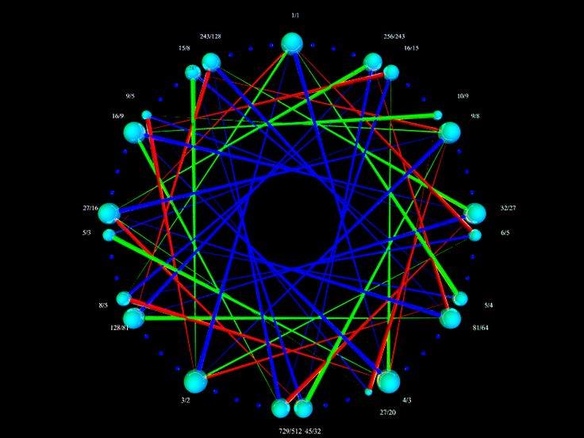

Generic Shape
More generally, the pentatonic core is stable; and other notes tend to move around
to suit the circumstances.
Note that in none of this have you seen an actual quartertone (1 fret) interval.
The harmonics on a string generally dictate where notes will lie, and there isn't
a useful second interval much smaller than a half tone (2 fret - small step).
This is another generic shape that arises, which is roughly centered around a Rast tonality.
This scale is practically impossible to resolve with non-quartertone instruments playing along though.
Harmonics
The reasoning behind the importance of interval sizes has to do with harmonics.
Harmonic 1 is the full string, 2 is octave, etc.
The importance in the order: octave, fifth, fourth, maj third, min third are made obvious by harmonics up to about 6.
The more fine intervals get their importance from how well they evenly divide these intervals.
This is why fret distances of 1 never appear in these scales.
Small seconds intervals are somewhere from harmonic 18 to 15.
Medium seconds intervals are somewhere from 13 to 11.
Large seconds intervals are around 9 to 10.
Notice that harmonic 5 is slightly flat of the nearby fret.
This is why when playing a maj third interval between two strings, bend the bottom note
up a little bit until the timbre of the chord cleans up (and the beating goes away).
This narrows the distance between the two notes.
Similarly harmonic 6 is slightly sharp of the nearby fret.
So when playing minor third intervals between two strings, bend the top note up
a little bit until the timbre of the chord cleans up (again, eliminates beating).
This stretches the distance between the two notes.
Other intervals like a semitone (ie: an E and F played together) can be made just by bending
the F up a little bit to clean up the chord. The locations of the harmonics make it clear
what the pattern of adjustments for intervals is going to be.
53 Equal Temperment
In books on Maqam, the topic of alternate equal temperments as landmarks
comes up. After 24 equal as a useful approximation (for notating notes especially),
53 equal arises as a way to accurately reason about the microtonal details.
(See Touma's book "Music Of The Arabs").
Maqam is closely tied to Pythagorean tuning, where scales can be roughly thought of as
a span of perfect fifths.
A span of 53 perfect fifths comes so close to closing into a circle, that as
far as this drawing goes, it doesn't matter whether we literally draw a scale
created by spanning 53 perfect fifths or using 53 equal temperment.
See how well the more important harmonics line up with fret locations.
The fret widths drawn were automatically generated based on how close they
are in the perfect circle of fifths.
Many instruments only include a subset of these frets, using a span of 22 fifths.
That leaves a pattern where whole tones are cut into 9 equal parts, where
whole tones (from fret 0 to fret 9, a pitch difference of 9/8) have no exact semitone.
There is a semitone at either 4 or 5, for high or low semitones.
Usually, the large semitone is used, as it more closely matches actual harmonics.
When moving from note to note, there are temporary chords of a semitone going on.
In this system:
- A fifth is 31 frets
- A fourth is 22 frets (and is how we tune the strings to each other)
- A large whole tone is 9 frets, corresponding to 9/8 pitch.
- A small whole tone is 8 frets, corresponding to 10/9 pitch.
- The harmonic series says that a minor third is fret 14 for 6/5 pitch.
- But by perfect circle of fifths (ie: Pythagorean reasoning), a minor third is fret 13, corresponding to (4/3)^3 (ie: if you tune a guitar with harmonics E A D G, G will be (4/3)^3.
- Similarly, the choice of major third by harmonics pitch 5/4. That matches fret 17 quite closely. But by Pythagorean reasoning, this is two whole tones up to fret 18, reached by (3/2)^4.
- In both cases, the ratio 81/80 makes the difference between harmonics and Pythagorean reasoning.
- In spite of Maqam being strongly oriented around quartertone intervals,
the best choice for a quartertone is 13/12. In practice, 11/10 is
usually what is meant by a quartertone, but it doesn't quite match a 53et
fret. Sometimes 12/11 is meant (in between 13/12 and 11/10), but it also
isn't quite accurately represented by a 53equal fret. (It happens to be that
the 24et quartertone is basically a 12/11.) In this case though,
if notes are notated in 53et with a qualification that the note is a little
low or high, there can be very little doubt as to exactly what pitch is implied.
When reading ambiguous statements like,
"the major third of Ajam needs to be lowered a little bit to be more mellow",
the reasoning behind it is much more obvious when the fretboard is at least
thought of in terms of 53 equal temperment. In that case, the idea is to make the
major third match 5/4.
As a side-note about a common definition of "Sruti", a span of 22 perfect fifths
will cause a scale that is very close to 12et to arise; except every note other than
the root and fifth will have a doubled partner very close by
(roughly distance 81/80 away). Similarly, a span of 17 perfect fifths gives a
Pythagorean intonation where sharps and flats are distinct, like split black keys.
Then spanning only 12 gives the true Pythagorean piano tuning, with its wolf interval
among an otherwise fantastic intonation. Spanning 7 gives a purely intoned diatonic
scale, and spanning 5 gives a purely intoned pentatonic scale.

Using this diagram, you can calculate explicitly how to reach a 53et fret
by navigating in terms of only fourths, fifths, maj third, min third.
The given ratios are just the more obvious equivalent ratios at that location.
The point of this diagram is to show
that 12et is an approximation of this Sruti span of 22 perfect fifths. And
even though it's defined in terms of "3-limit" (pure fifths), it actually contains
some "5-limit" (including Just Intonation thirds). And finally, the 53 equal
temperment encompasses them both. To some degree, this whole system exists
as a side-effect of people playing string instruments with the strings tuned
fourths and fifths apart; where the 81/80 pitch drift depending on melodic path
is an issue that must be explicitly dealt with. 12et simply equates these close
note pairs to make them go away in theory, but this issue still exists physically
in the sound; creating a tension between clean chorde timbre (ie: beating) versus
having distinct instruments playing from the same pitch set.
Other equal temperments are possible. For practical reasons, 31 equal temperment
might be a reasonable upper limit for most fretted and keyed instruments.
Just for the sake of completeness, I will include it here.
It is well known for being a great choice for triads (major and minor chords).
It also doesn't have the 81/80 problem, as it is theoretically derived from
a Just circle of major thirds.
But note that it's not a great fit for Pythagorean intervals, which is
important to support in maqam.
The important pitch ratios are in this (large) image as an octave equivalent ratio oriented pitch wheel.
Suggestions
Based on this, materials and price issues aside, it may be ideal in a microtonal
guitar (fretted or unfretted) to:
- For quartertone guitars, perhaps fret coloring or width should alternate for
even and odd frets. Or maybe this should be part of the inlay pattern.
The Kamal Musallam Ibanez Oriental Series actually does this, though
it isn't fully quartertone fretted, even at the bottom of the neck.
- If a subset of 53 equal temperment can't be used, then perhaps fretless
necks should be inlaid with a 53 equal temperment pattern. This pattern
should roughly look like the 53EDO diagram to make it easy to visually
count out the long fret jumps. Playing an actual 53 equal temperment
guitar will require having a fretboard vision that quickly locates
wholetone, fourth, and fifth relationships. GeoSynthesizer has such
a pattern, but that pattern relies on "flattening" out the distance
between frets so that lines can be drawn between strings that make it
easy to intuitively play Just Intonation chords even with comma drift happening.
(Comma drift is landing one fret off at the end of navigating a phrase
by pure pitch ratios.)


{kind=link}